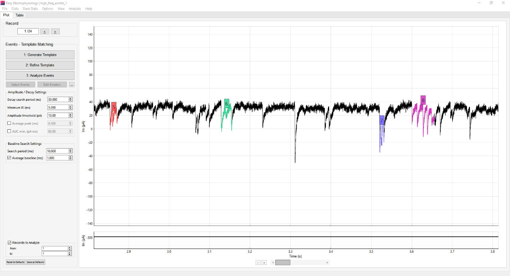
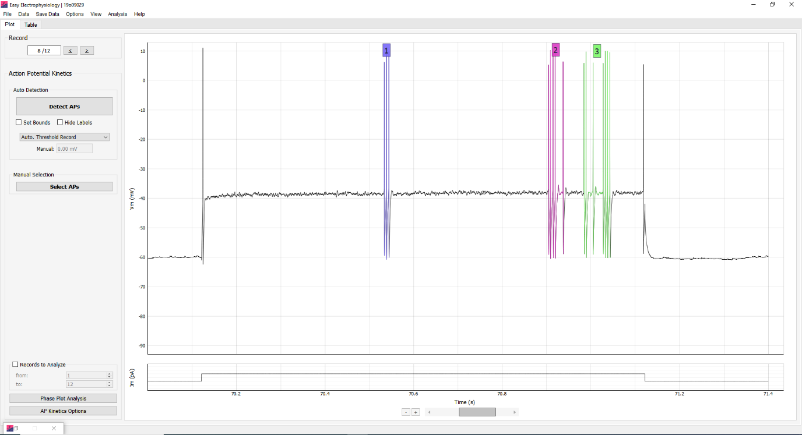
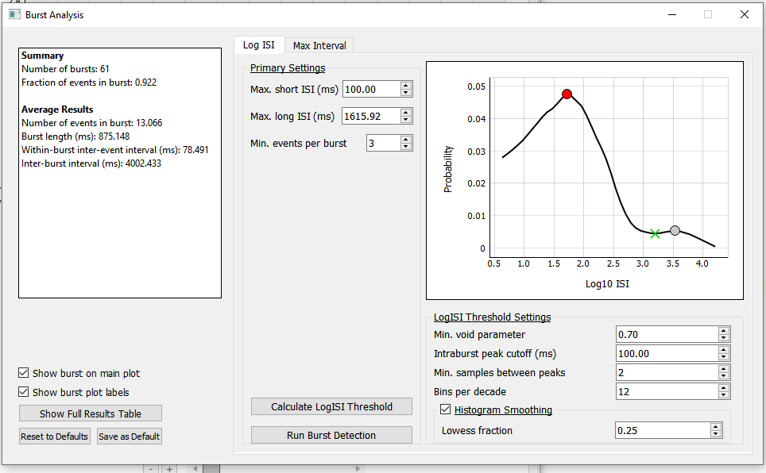

Burst analysis
Burst Analysis is available for both Events (Events Template, Events Thresholding) and AP (AP Kinetics) analysis. After running an Events or AP Kinetics analysis, burst analysis can be accessed by Analysis › Burst Analysis from the top menu bar.
Two methods for Burst Analysis are provided, the LogISI and MaxInterval method, the two best performing methods as described in Cotterill et al. (2016).
Burst Analysis Parameters
Run Burst Analysis will auto-detect bursts in the data (see below for details of burst detection methods) and calculate burst summary.
When burst analysis is run, the main plot will update to display the detected bursts. To switch between main plot views, toggle Show Burst on Main Plot.
Note that in the software, a detected spike or event is called ‘spike’ in AP Kinetics mode and an ‘event’ in Events mode. In this documentation, we will use the term ‘spike’ to cover both cases. The inter-spike interval (ISI) is defined as the time period between two consecutive spikes.

Summary Statistics
The burst summary statistics are displayed on the left-hand panel of the burst analysis window, as well as in the results table (Show Full Results Table).
Number of bursts: Total number of detected bursts in the dataset (where the dataset is the number of detected APs or events).
Fraction of spikes in burst: Proportion of detected spikes that are in a burst. Calculated as (total spikes in a burst / total detected spikes).
Averages
Number of spikes in burst: Average number of spikes in a burst (calculated as the average Num. Spikes in Burst across all bursts).
Burst length (ms): Average length of a burst in milliseconds (calculated as the average Burst Length (ms) across all bursts).
Within-burst inter-spike interval (ms): Average inter-spike interval of spikes found in a burst (calculated as the average Mean Inter-event Interval (ms) across all bursts)
Inter-burst interval (ms): Average time interval between successive bursts (in milliseconds).

Per-Burst Statistics
The parameters calculated for each burst are displayed in the results table. These include the number of spikes (Num. Spikes in Burst), burst length (Burst Length (ms)), and average inter-spike interval within that burst (Mean Inter-event Interval (ms)).
Further, the results table displays for each detected spike: the record, peak time and burst it belongs to (In Burst, N/A if spike is not in a burst).

Burst detection methods
Log ISI
The Log ISI method (Pasquale et al., 2016) extends burst analysis to hard-to-detect burst boundaries by calculating an additional inter-spike interval threshold from the data, using the logarithmically-scaled histogram of ISIs.
The algorithm proceeds by using a manually set, short ISI (Max. short ISI (ms), typically 100 ms) and a long ISI (Max. long ISI (ms)) generated from the logISI histogram. The short ISI is used to detect burst cores, while the long ISI is used to extend these cores to the burst boundaries. If the long ISI is smaller than the short ISI, the long ISI is used as both.
Calculate LogISI Threshold will calculate and plot the logISI histogram used for long ISI calculation. The detected threshold will be displayed with a green cross and the long ISI updated to the thresholded value (see below for more details on threshold detection).
Primary Settings:
Max. short ISI (ms): The short ISI used to detect burst cores in the first-pass analysis. This is set manually, typical value used is 100 ms.
Max. long ISI (ms): The long ISI used to detect the burst boundaries, extending the burst cores. This is calculated from the data (logISI histogram), or can be set manually.
Min. spikes per burst: The minimum number of spikes in a burst. Bursts detected from ISI analysis with less than this number of spikes will be excluded.
LogISI Threshold Settings
The long ISI is calculated from the LogISI histogram using a peak and trough-finding algorithm. First, the intra-burst peak (expected to be dominated by the short ISI of spikes in bursts) is detected. This is expected to be the smallest peak (i.e. within-burst ISI), and so the search range is usually small (e.g. default 100 ms).
Next, all other peaks of the logISI histogram are found. A ‘void parameter’ is computed between the intra-burst peak and all other peaks, capturing the depth of the trough in between the two peaks. The trough with the highest void parameter (i.e. ISI that best separates the peaks) is taken as the new long ISI threshold (see Pasquale et al., (2016) for equations).
Min. void parameter: This sets the minimum acceptable void parameter, lowering it will increase chances of finding local minimum.
Intraburst peak cutoff (ms): The time window over which to search for the intraburst peak (the intraburst peak, consisting of the smallest ISIs, will be searched for between 0 and the intraburst peak cutoff (ms)).
Min. samples between peaks: The minimum number of samples used in the peak-detection algorithm when searching for all additional (i.e. non-intraburst) logISI histogram peaks.
Bins per decade: Sets the logISI histogram bin-size. Increasing the number of bins per decade increases the sampling of the histogram and can improve threshold detection.
Histogram smoothing: If set, LOWESS smoothing will be used to smooth the histogram.
Lowess fraction: Sets the number of points used in the local regression for LOWESS smoothing. Determines the smoothness (increasing will increase smoothness).
Max interval
The MaxInterval method, as it is commonly described in the literature, is an inter-spike interval thresholding approach that proceeds based on the following thresholds:
Max. Interval (ms): Maximum ISI at which the first ISI in a burst must not exceed.
Max. end interval (ms): Maximum ISI at which the last ISI in a burst must not exceed.
Min. burst interval (ms): Minimum ISI at which the inter-burst interval between two successive bursts must not exceed.
Min. burst duration (ms): Minimum duration in time a burst must be to be detected.
Min. spikes per burst: Minimum number of spikes a burst must have to be included in the analysis.